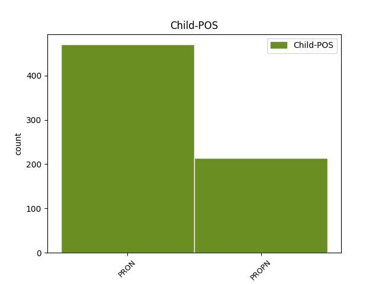

Distribution of features within this leaf

Agreement Rules sorted by frequency.
When the head token is NOUN and the dependent token is PRON.
1 Pentru _ _ _ _ 0 _ _ _
2 a _ _ _ _ 0 _ _ _
3 ilustra _ _ _ _ 0 _ _ _
4 însă _ _ _ _ 0 _ _ _
5 diferența _ _ _ _ 0 _ _ _
6 dintre _ _ _ _ 0 _ _ _
7 probabilități _ _ _ _ 0 _ _ _
8 și _ _ _ _ 0 _ _ _
9 statistică _ _ _ _ 0 _ _ _
10 să _ _ _ _ 0 _ _ _
11 considerăm _ _ _ _ 0 _ _ _
12 două _ _ _ _ 0 _ _ _
13 urne urnă NOUN Ncfp-n Definite=Ind|Gender=Fem|Number=Plur 0 _ _ _
14 : _ _ _ _ 0 _ _ _
15 una unul PRON Pi3fsr Case=Acc,Nom|Gender=Fem|Number=Sing|Person=3|PronType=Ind 13 appos _ _
16 probabilistă _ _ _ _ 0 _ _ _
17 și _ _ _ _ 0 _ _ _
18 una _ _ _ _ 0 _ _ _
19 statistică _ _ _ _ 0 _ _ _
20 . _ _ _ _ 0 _ _ _
When the head token is NOUN and the dependent token is PROPN.
1 Iași _ _ _ _ 0 _ _ _
2 a _ _ _ _ 0 _ _ _
3 fost _ _ _ _ 0 _ _ _
4 capitala _ _ _ _ 0 _ _ _
5 Moldovei _ _ _ _ 0 _ _ _
6 în _ _ _ _ 0 _ _ _
7 perioada _ _ _ _ 0 _ _ _
8 1564 _ _ _ _ 0 _ _ _
9 - _ _ _ _ 0 _ _ _
10 1859 _ _ _ _ 0 _ _ _
11 , _ _ _ _ 0 _ _ _
12 una _ _ _ _ 0 _ _ _
13 dintre _ _ _ _ 0 _ _ _
14 cele _ _ _ _ 0 _ _ _
15 două _ _ _ _ 0 _ _ _
16 capitale _ _ _ _ 0 _ _ _
17 ale _ _ _ _ 0 _ _ _
18 Principatelor _ _ _ _ 0 _ _ _
19 Unite _ _ _ _ 0 _ _ _
20 între _ _ _ _ 0 _ _ _
21 1859 _ _ _ _ 0 _ _ _
22 și _ _ _ _ 0 _ _ _
23 1862 _ _ _ _ 0 _ _ _
24 și _ _ _ _ 0 _ _ _
25 capitala capitală NOUN Ncfsry Case=Acc,Nom|Definite=Def|Gender=Fem|Number=Sing 0 _ _ _
26 României România PROPN Npfsoy Case=Dat,Gen|Definite=Def|Gender=Fem|Number=Sing 25 mod _ _
27 între _ _ _ _ 0 _ _ _
28 1916 _ _ _ _ 0 _ _ _
29 - _ _ _ _ 0 _ _ _
30 1918 _ _ _ _ 0 _ _ _
31 . _ _ _ _ 0 _ _ _
When the head token is ADJ and the dependent token is PRON.
1 Principalele _ _ _ _ 0 _ _ _
2 industrii _ _ _ _ 0 _ _ _
3 ale _ _ _ _ 0 _ _ _
4 României _ _ _ _ 0 _ _ _
5 sunt _ _ _ _ 0 _ _ _
6 cea _ _ _ _ 0 _ _ _
7 textilă _ _ _ _ 0 _ _ _
8 și _ _ _ _ 0 _ _ _
9 de _ _ _ _ 0 _ _ _
10 încălțăminte _ _ _ _ 0 _ _ _
11 , _ _ _ _ 0 _ _ _
12 industria _ _ _ _ 0 _ _ _
13 metalurgică _ _ _ _ 0 _ _ _
14 , _ _ _ _ 0 _ _ _
15 de _ _ _ _ 0 _ _ _
16 mașini _ _ _ _ 0 _ _ _
17 ușoare _ _ _ _ 0 _ _ _
18 și _ _ _ _ 0 _ _ _
19 de _ _ _ _ 0 _ _ _
20 ansamblare _ _ _ _ 0 _ _ _
21 de _ _ _ _ 0 _ _ _
22 mașini _ _ _ _ 0 _ _ _
23 , _ _ _ _ 0 _ _ _
24 minieră _ _ _ _ 0 _ _ _
25 , _ _ _ _ 0 _ _ _
26 de _ _ _ _ 0 _ _ _
27 prelucrare _ _ _ _ 0 _ _ _
28 a _ _ _ _ 0 _ _ _
29 lemnului _ _ _ _ 0 _ _ _
30 , _ _ _ _ 0 _ _ _
31 a _ _ _ _ 0 _ _ _
32 materialelor _ _ _ _ 0 _ _ _
33 de _ _ _ _ 0 _ _ _
34 construcții _ _ _ _ 0 _ _ _
35 , _ _ _ _ 0 _ _ _
36 chimică _ _ _ _ 0 _ _ _
37 , _ _ _ _ 0 _ _ _
38 alimentară alimentar ADJ Afpfsrn Case=Acc,Nom|Definite=Ind|Degree=Pos|Gender=Fem|Number=Sing 0 _ _ _
39 și _ _ _ _ 0 _ _ _
40 cea acela PRON Pd3fsr Case=Acc,Nom|Gender=Fem|Number=Sing|Person=3|PronType=Dem 38 conj _ _
41 de _ _ _ _ 0 _ _ _
42 rafinare _ _ _ _ 0 _ _ _
43 a _ _ _ _ 0 _ _ _
44 petrolului _ _ _ _ 0 _ _ _
45 . _ _ _ _ 0 _ _ _
When the head token is VERB and the dependent token is PRON.
1 În _ _ _ _ 0 _ _ _
2 schimb _ _ _ _ 0 _ _ _
3 , _ _ _ _ 0 _ _ _
4 32 _ _ _ _ 0 _ _ _
5 % _ _ _ _ 0 _ _ _
6 din _ _ _ _ 0 _ _ _
7 populația _ _ _ _ 0 _ _ _
8 tării _ _ _ _ 0 _ _ _
9 este _ _ _ _ 0 _ _ _
10 angajată angaja VERB Vmp--sf Gender=Fem|Number=Sing|VerbForm=Part 0 _ _ _
11 în _ _ _ _ 0 _ _ _
12 agricultură _ _ _ _ 0 _ _ _
13 și _ _ _ _ 0 _ _ _
14 producție _ _ _ _ 0 _ _ _
15 , _ _ _ _ 0 _ _ _
16 una unul PRON Pi3fsr Case=Acc,Nom|Gender=Fem|Number=Sing|Person=3|PronType=Ind 10 appos _ _
17 dintre _ _ _ _ 0 _ _ _
18 cele _ _ _ _ 0 _ _ _
19 mai _ _ _ _ 0 _ _ _
20 mari _ _ _ _ 0 _ _ _
21 rate _ _ _ _ 0 _ _ _
22 din _ _ _ _ 0 _ _ _
23 Europa _ _ _ _ 0 _ _ _
24 . _ _ _ _ 0 _ _ _
When the head token is PRON and the dependent token is PRON.
1 Pentru _ _ _ _ 0 _ _ _
2 a _ _ _ _ 0 _ _ _
3 ilustra _ _ _ _ 0 _ _ _
4 însă _ _ _ _ 0 _ _ _
5 diferența _ _ _ _ 0 _ _ _
6 dintre _ _ _ _ 0 _ _ _
7 probabilități _ _ _ _ 0 _ _ _
8 și _ _ _ _ 0 _ _ _
9 statistică _ _ _ _ 0 _ _ _
10 să _ _ _ _ 0 _ _ _
11 considerăm _ _ _ _ 0 _ _ _
12 două _ _ _ _ 0 _ _ _
13 urne _ _ _ _ 0 _ _ _
14 : _ _ _ _ 0 _ _ _
15 una unul PRON Pi3fsr Case=Acc,Nom|Gender=Fem|Number=Sing|Person=3|PronType=Ind 0 _ _ _
16 probabilistă _ _ _ _ 0 _ _ _
17 și _ _ _ _ 0 _ _ _
18 una unul PRON Pi3fsr Case=Acc,Nom|Gender=Fem|Number=Sing|Person=3|PronType=Ind 15 conj _ _
19 statistică _ _ _ _ 0 _ _ _
20 . _ _ _ _ 0 _ _ _
When the head token is ADJ and the dependent token is PROPN.
1 La _ _ _ _ 0 _ _ _
2 nivel _ _ _ _ 0 _ _ _
3 internațional _ _ _ _ 0 _ _ _
4 , _ _ _ _ 0 _ _ _
5 selecționata selecționat ADJ Afpfsry Case=Acc,Nom|Definite=Def|Degree=Pos|Gender=Fem|Number=Sing 0 _ _ _
6 de _ _ _ _ 0 _ _ _
7 fotbal _ _ _ _ 0 _ _ _
8 a _ _ _ _ 0 _ _ _
9 României România PROPN Npfsoy Case=Dat,Gen|Definite=Def|Gender=Fem|Number=Sing 5 udep _ _
10 a _ _ _ _ 0 _ _ _
11 participat _ _ _ _ 0 _ _ _
12 până _ _ _ _ 0 _ _ _
13 acum _ _ _ _ 0 _ _ _
14 la _ _ _ _ 0 _ _ _
15 7 _ _ _ _ 0 _ _ _
16 Campionate _ _ _ _ 0 _ _ _
17 Mondiale _ _ _ _ 0 _ _ _
18 de _ _ _ _ 0 _ _ _
19 Fotbal _ _ _ _ 0 _ _ _
20 . _ _ _ _ 0 _ _ _
When the head token is PROPN and the dependent token is PROPN.
1 Liderii _ _ _ _ 0 _ _ _
2 României _ _ _ _ 0 _ _ _
3 postdecembriste _ _ _ _ 0 _ _ _
4 au _ _ _ _ 0 _ _ _
5 făcut _ _ _ _ 0 _ _ _
6 declarații _ _ _ _ 0 _ _ _
7 publice _ _ _ _ 0 _ _ _
8 în _ _ _ _ 0 _ _ _
9 ceea _ _ _ _ 0 _ _ _
10 ce _ _ _ _ 0 _ _ _
11 privește _ _ _ _ 0 _ _ _
12 strângerea _ _ _ _ 0 _ _ _
13 relațiilor _ _ _ _ 0 _ _ _
14 cu _ _ _ _ 0 _ _ _
15 alte _ _ _ _ 0 _ _ _
16 țări _ _ _ _ 0 _ _ _
17 europene _ _ _ _ 0 _ _ _
18 și _ _ _ _ 0 _ _ _
19 , _ _ _ _ 0 _ _ _
20 de _ _ _ _ 0 _ _ _
21 asemenea _ _ _ _ 0 _ _ _
22 , _ _ _ _ 0 _ _ _
23 în _ _ _ _ 0 _ _ _
24 ceea _ _ _ _ 0 _ _ _
25 ce _ _ _ _ 0 _ _ _
26 privește _ _ _ _ 0 _ _ _
27 ajutorul _ _ _ _ 0 _ _ _
28 dat _ _ _ _ 0 _ _ _
29 acestora _ _ _ _ 0 _ _ _
30 în _ _ _ _ 0 _ _ _
31 procesul _ _ _ _ 0 _ _ _
32 integrării _ _ _ _ 0 _ _ _
33 euro-atlantice _ _ _ _ 0 _ _ _
34 , _ _ _ _ 0 _ _ _
35 în _ _ _ _ 0 _ _ _
36 special _ _ _ _ 0 _ _ _
37 în _ _ _ _ 0 _ _ _
38 cazul _ _ _ _ 0 _ _ _
39 Moldovei Moldova PROPN Npfsoy Case=Dat,Gen|Definite=Def|Gender=Fem|Number=Sing 0 _ _ _
40 , _ _ _ _ 0 _ _ _
41 Ucrainei Ucraina PROPN Npfsoy Case=Dat,Gen|Definite=Def|Gender=Fem|Number=Sing 39 conj _ _
42 și _ _ _ _ 0 _ _ _
43 Georgiei _ _ _ _ 0 _ _ _
44 . _ _ _ _ 0 _ _ _
When the head token is DET and the dependent token is PROPN.
1 Fosta _ _ _ _ 0 _ _ _
2 Republică _ _ _ _ 0 _ _ _
3 Iugoslavă _ _ _ _ 0 _ _ _
4 a al DET Tsfs Gender=Fem|Number=Sing|Poss=Yes|PronType=Prs 0 _ _ _
5 Macedoniei Macedonia PROPN Npfsoy Case=Dat,Gen|Definite=Def|Gender=Fem|Number=Sing 4 unk@fixed _ _
6 se _ _ _ _ 0 _ _ _
7 angajează _ _ _ _ 0 _ _ _
8 să _ _ _ _ 0 _ _ _
9 nu _ _ _ _ 0 _ _ _
10 revendice _ _ _ _ 0 _ _ _
11 , _ _ _ _ 0 _ _ _
12 să _ _ _ _ 0 _ _ _
13 nu _ _ _ _ 0 _ _ _
14 solicite _ _ _ _ 0 _ _ _
15 , _ _ _ _ 0 _ _ _
16 să _ _ _ _ 0 _ _ _
17 nu _ _ _ _ 0 _ _ _
18 remită _ _ _ _ 0 _ _ _
19 , _ _ _ _ 0 _ _ _
20 nici _ _ _ _ 0 _ _ _
21 să _ _ _ _ 0 _ _ _
22 modifice _ _ _ _ 0 _ _ _
23 sau _ _ _ _ 0 _ _ _
24 să _ _ _ _ 0 _ _ _
25 retragă _ _ _ _ 0 _ _ _
26 nici _ _ _ _ 0 _ _ _
27 o _ _ _ _ 0 _ _ _
28 concesie _ _ _ _ 0 _ _ _
29 în _ _ _ _ 0 _ _ _
30 temeiul _ _ _ _ 0 _ _ _
31 articolelor _ _ _ _ 0 _ _ _
32 XXIV _ _ _ _ 0 _ _ _
33 . _ _ _ _ 0 _ _ _
34 6 _ _ _ _ 0 _ _ _
35 și _ _ _ _ 0 _ _ _
36 XXVIII _ _ _ _ 0 _ _ _
37 din _ _ _ _ 0 _ _ _
38 GATT _ _ _ _ 0 _ _ _
39 1994 _ _ _ _ 0 _ _ _
40 în _ _ _ _ 0 _ _ _
41 legătură _ _ _ _ 0 _ _ _
42 cu _ _ _ _ 0 _ _ _
43 extinderea _ _ _ _ 0 _ _ _
44 Comunității _ _ _ _ 0 _ _ _
45 . _ _ _ _ 0 _ _ _
When the head token is NUM and the dependent token is PRON.
1 Când _ _ _ _ 0 _ _ _
2 acesta _ _ _ _ 0 _ _ _
3 a _ _ _ _ 0 _ _ _
4 ajuns _ _ _ _ 0 _ _ _
5 pe _ _ _ _ 0 _ _ _
6 o _ _ _ _ 0 _ _ _
7 stradă _ _ _ _ 0 _ _ _
8 slab _ _ _ _ 0 _ _ _
9 luminată _ _ _ _ 0 _ _ _
10 , _ _ _ _ 0 _ _ _
11 cei acela PRON Pd3mpr Case=Acc,Nom|Gender=Masc|Number=Plur|Person=3|PronType=Dem 12 det _ _
12 doi doi NUM Mcmp-l Gender=Masc|Number=Plur|NumForm=Word|NumType=Card 0 _ _ _
13 au _ _ _ _ 0 _ _ _
14 sărit _ _ _ _ 0 _ _ _
15 pe _ _ _ _ 0 _ _ _
16 el _ _ _ _ 0 _ _ _
17 , _ _ _ _ 0 _ _ _
18 l- _ _ _ _ 0 _ _ _
19 au _ _ _ _ 0 _ _ _
20 lovit _ _ _ _ 0 _ _ _
21 în _ _ _ _ 0 _ _ _
22 cap _ _ _ _ 0 _ _ _
23 și _ _ _ _ 0 _ _ _
24 l- _ _ _ _ 0 _ _ _
25 au _ _ _ _ 0 _ _ _
26 deposedat _ _ _ _ 0 _ _ _
27 de _ _ _ _ 0 _ _ _
28 800 _ _ _ _ 0 _ _ _
29 000 _ _ _ _ 0 _ _ _
30 de _ _ _ _ 0 _ _ _
31 lei _ _ _ _ 0 _ _ _
32 . _ _ _ _ 0 _ _ _
When the head token is DET and the dependent token is PRON.
1 De _ _ _ _ 0 _ _ _
2 câte _ _ _ _ 0 _ _ _
3 ori _ _ _ _ 0 _ _ _
4 se _ _ _ _ 0 _ _ _
5 deschide _ _ _ _ 0 _ _ _
6 ușa _ _ _ _ 0 _ _ _
7 , _ _ _ _ 0 _ _ _
8 toate tot DET Di3fpr Case=Acc,Nom|Gender=Fem|Number=Plur|Person=3|PronType=Ind 0 _ _ _
9 capetele _ _ _ _ 0 _ _ _
10 , _ _ _ _ 0 _ _ _
11 dar _ _ _ _ 0 _ _ _
12 absolut _ _ _ _ 0 _ _ _
13 toate tot PRON Pi3fpr Case=Acc,Nom|Gender=Fem|Number=Plur|Person=3|PronType=Ind 8 conj _ SpaceAfter=No
14 , _ _ _ _ 0 _ _ _
15 ca _ _ _ _ 0 _ _ _
16 la _ _ _ _ 0 _ _ _
17 o _ _ _ _ 0 _ _ _
18 comandă _ _ _ _ 0 _ _ _
19 , _ _ _ _ 0 _ _ _
20 se _ _ _ _ 0 _ _ _
21 -ndreaptă _ _ _ _ 0 _ _ _
22 spre _ _ _ _ 0 _ _ _
23 ea _ _ _ _ 0 _ _ _
24 , _ _ _ _ 0 _ _ _
25 să _ _ _ _ 0 _ _ _
26 vadă _ _ _ _ 0 _ _ _
27 cine _ _ _ _ 0 _ _ _
28 mai _ _ _ _ 0 _ _ _
29 vine _ _ _ _ 0 _ _ _
30 . _ _ _ _ 0 _ _ _
When the head token is VERB and the dependent token is PROPN.
1 Prin _ _ _ _ 0 _ _ _
2 încheierea _ _ _ _ 0 _ _ _
3 pactului _ _ _ _ 0 _ _ _
4 dualist _ _ _ _ 0 _ _ _
5 în _ _ _ _ 0 _ _ _
6 1867 _ _ _ _ 0 _ _ _
7 , _ _ _ _ 0 _ _ _
8 Transilvania _ _ _ _ 0 _ _ _
9 și- _ _ _ _ 0 _ _ _
10 a _ _ _ _ 0 _ _ _
11 pierdut _ _ _ _ 0 _ _ _
12 la _ _ _ _ 0 _ _ _
13 scurtă _ _ _ _ 0 _ _ _
14 vreme _ _ _ _ 0 _ _ _
15 resturile _ _ _ _ 0 _ _ _
16 autonomiei _ _ _ _ 0 _ _ _
17 sale _ _ _ _ 0 _ _ _
18 politice _ _ _ _ 0 _ _ _
19 , _ _ _ _ 0 _ _ _
20 fiind _ _ _ _ 0 _ _ _
21 înglobată îngloba VERB Vmp--sf Gender=Fem|Number=Sing|VerbForm=Part 0 _ _ _
22 din _ _ _ _ 0 _ _ _
23 punct _ _ _ _ 0 _ _ _
24 de _ _ _ _ 0 _ _ _
25 vedere _ _ _ _ 0 _ _ _
26 politic _ _ _ _ 0 _ _ _
27 și _ _ _ _ 0 _ _ _
28 administrativ _ _ _ _ 0 _ _ _
29 Ungariei Ungaria PROPN Npfsoy Case=Dat,Gen|Definite=Def|Gender=Fem|Number=Sing 21 comp:obl _ SpaceAfter=No
30 . _ _ _ _ 0 _ _ _
Disagree Examples:
1 Mergea _ _ _ _ 0 _ _ _
2 la _ _ _ _ 0 _ _ _
3 un _ _ _ _ 0 _ _ _
4 moment _ _ _ _ 0 _ _ _
5 dat _ _ _ _ 0 _ _ _
6 pe _ _ _ _ 0 _ _ _
7 un _ _ _ _ 0 _ _ _
8 coridor _ _ _ _ 0 _ _ _
9 lung _ _ _ _ 0 _ _ _
10 , _ _ _ _ 0 _ _ _
11 la _ _ _ _ 0 _ _ _
12 Minister _ _ _ _ 0 _ _ _
13 , _ _ _ _ 0 _ _ _
14 și _ _ _ _ 0 _ _ _
15 când _ _ _ _ 0 _ _ _
16 ajunsese _ _ _ _ 0 _ _ _
17 cam _ _ _ _ 0 _ _ _
18 în _ _ _ _ 0 _ _ _
19 același _ _ _ _ 0 _ _ _
20 loc _ _ _ _ 0 _ _ _
21 unde _ _ _ _ 0 _ _ _
22 Julia _ _ _ _ 0 _ _ _
23 îi _ _ _ _ 0 _ _ _
24 strecurase _ _ _ _ 0 _ _ _
25 bilețelul _ _ _ _ 0 _ _ _
26 în _ _ _ _ 0 _ _ _
27 mână _ _ _ _ 0 _ _ _
28 , _ _ _ _ 0 _ _ _
29 își _ _ _ _ 0 _ _ _
30 dăduse _ _ _ _ 0 _ _ _
31 seama _ _ _ _ 0 _ _ _
32 că _ _ _ _ 0 _ _ _
33 exact _ _ _ _ 0 _ _ _
34 în _ _ _ _ 0 _ _ _
35 spatele _ _ _ _ 0 _ _ _
36 lui _ _ _ _ 0 _ _ _
37 mergea _ _ _ _ 0 _ _ _
38 cineva _ _ _ _ 0 _ _ _
39 , _ _ _ _ 0 _ _ _
40 mai _ _ _ _ 0 _ _ _
41 mare mare ADJ Afpfsrn Case=Acc,Nom|Definite=Ind|Degree=Pos|Gender=Fem|Number=Sing 0 _ _ _
42 decât _ _ _ _ 0 _ _ _
43 el el PRON Pp3msr--------s Case=Acc,Nom|Gender=Masc|Number=Sing|Person=3|PronType=Prs|Strength=Strong 41 udep _ SpaceAfter=No
44 . _ _ _ _ 0 _ _ _
1 În _ _ _ _ 0 _ _ _
2 sfârșit _ _ _ _ 0 _ _ _
3 , _ _ _ _ 0 _ _ _
4 se _ _ _ _ 0 _ _ _
5 găseau _ _ _ _ 0 _ _ _
6 față _ _ _ _ 0 _ _ _
7 în _ _ _ _ 0 _ _ _
8 față _ _ _ _ 0 _ _ _
9 și _ _ _ _ 0 _ _ _
10 parcă _ _ _ _ 0 _ _ _
11 prima _ _ _ _ 0 _ _ _
12 și _ _ _ _ 0 _ _ _
13 singura _ _ _ _ 0 _ _ _
14 lui el PRON Pp3mso--------s Case=Dat,Gen|Gender=Masc|Number=Sing|Person=3|PronType=Prs|Strength=Strong 15 mod _ _
15 pornire pornire NOUN Ncfsrn Case=Acc,Nom|Definite=Ind|Gender=Fem|Number=Sing 0 _ _ _
16 era _ _ _ _ 0 _ _ _
17 să _ _ _ _ 0 _ _ _
18 fugă _ _ _ _ 0 _ _ _
19 de _ _ _ _ 0 _ _ _
20 acolo _ _ _ _ 0 _ _ _
21 . _ _ _ _ 0 _ _ _
1 Ai _ _ _ _ 0 _ _ _
2 consultat _ _ _ _ 0 _ _ _
3 cumva _ _ _ _ 0 _ _ _
4 Ediția _ _ _ _ 0 _ _ _
5 a _ _ _ _ 0 _ _ _
6 Zecea _ _ _ _ 0 _ _ _
7 a _ _ _ _ 0 _ _ _
8 Dicționarului dicționar NOUN Ncmsoy Case=Dat,Gen|Definite=Def|Gender=Masc|Number=Sing 0 _ _ _
9 Nouvorbei Nouvorbă PROPN Npfsoy Case=Dat,Gen|Definite=Def|Gender=Fem|Number=Sing 8 mod _ SpaceAfter=No
10 ? _ _ _ _ 0 _ _ _
1 Era _ _ _ _ 0 _ _ _
2 ca _ _ _ _ 0 _ _ _
3 și _ _ _ _ 0 _ _ _
4 cum _ _ _ _ 0 _ _ _
5 mintea minte NOUN Ncfsry Case=Acc,Nom|Definite=Def|Gender=Fem|Number=Sing 0 _ _ _
6 fiecăruia fiecare PRON Pi3mso Case=Dat,Gen|Gender=Masc|Number=Sing|Person=3|PronType=Ind 5 mod _ _
7 s- _ _ _ _ 0 _ _ _
8 ar _ _ _ _ 0 _ _ _
9 fi _ _ _ _ 0 _ _ _
10 deschis _ _ _ _ 0 _ _ _
11 și _ _ _ _ 0 _ _ _
12 gândurile _ _ _ _ 0 _ _ _
13 ar _ _ _ _ 0 _ _ _
14 fi _ _ _ _ 0 _ _ _
15 zburat _ _ _ _ 0 _ _ _
16 de _ _ _ _ 0 _ _ _
17 la _ _ _ _ 0 _ _ _
18 unul _ _ _ _ 0 _ _ _
19 la _ _ _ _ 0 _ _ _
20 celălalt _ _ _ _ 0 _ _ _
21 prin _ _ _ _ 0 _ _ _
22 ochi _ _ _ _ 0 _ _ _
23 . _ _ _ _ 0 _ _ _
1 Omul _ _ _ _ 0 _ _ _
2 cel _ _ _ _ 0 _ _ _
3 scund _ _ _ _ 0 _ _ _
4 căzuse _ _ _ _ 0 _ _ _
5 în _ _ _ _ 0 _ _ _
6 patru _ _ _ _ 0 _ _ _
7 labe _ _ _ _ 0 _ _ _
8 , _ _ _ _ 0 _ _ _
9 tava _ _ _ _ 0 _ _ _
10 îi _ _ _ _ 0 _ _ _
11 zburase _ _ _ _ 0 _ _ _
12 din _ _ _ _ 0 _ _ _
13 mâini _ _ _ _ 0 _ _ _
14 , _ _ _ _ 0 _ _ _
15 iar _ _ _ _ 0 _ _ _
16 pe _ _ _ _ 0 _ _ _
17 podea _ _ _ _ 0 _ _ _
18 se _ _ _ _ 0 _ _ _
19 scurgeau _ _ _ _ 0 _ _ _
20 două _ _ _ _ 0 _ _ _
21 pârâiașe pârâiaș NOUN Ncfp-n Definite=Ind|Gender=Fem|Number=Plur 0 _ _ _
22 , _ _ _ _ 0 _ _ _
23 unul unul PRON Pi3msr Case=Acc,Nom|Gender=Masc|Number=Sing|Person=3|PronType=Ind 21 mod _ _
24 de _ _ _ _ 0 _ _ _
25 supă _ _ _ _ 0 _ _ _
26 , _ _ _ _ 0 _ _ _
27 celălalt _ _ _ _ 0 _ _ _
28 de _ _ _ _ 0 _ _ _
29 cafea _ _ _ _ 0 _ _ _
30 . _ _ _ _ 0 _ _ _